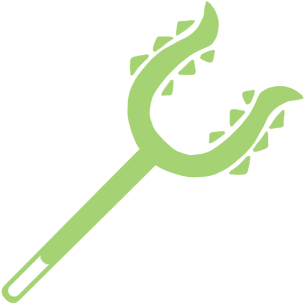
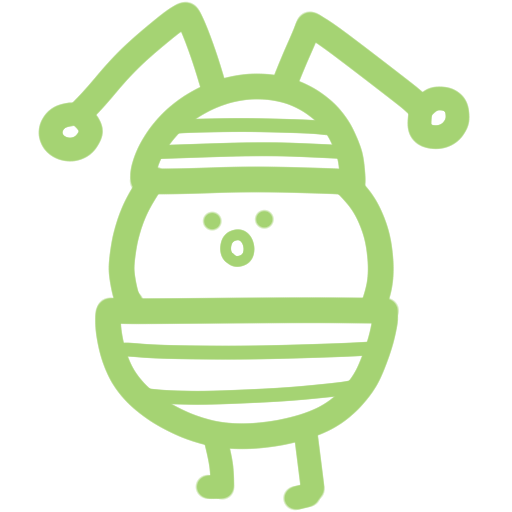

在這個世界裡

-賺取生活費-

-參加討伐-

-危險的生物-
跟我們一樣，小可愛和伙伴們為了存錢買東西，每天都要努力工作。
想要參加討伐，但是關鍵時刻卻害怕得動不了。
此外，這個世界還有一些奇妙的生物，其中一些可能對生物造成危害...
在獨特的世界觀中，依然能瞥見這種讓讀者很能感同身受的現實感。
《吉伊卡哇》（日語：ちいかわ）是由日本漫畫家ナガノ（Nagano）創作的漫畫系列。
本作主要描繪小可愛的日常，以簡單的多格漫畫，呈現不同的故事，世界充滿了森林、草原等自然豐富的景色，周圍還有巨大的食物、如同植物一樣，這個世界也具有文明，有住宅和商店林立，存在著貨幣經濟和網際網路的存在。
作為這個世界的居民，包括小可愛與夥伴主要從事像「除草」和「討伐」這樣的工作，以此維持生計。這些工作都是由一種叫做「盔甲人」的種族提供，此外，還存在著各種資格和相應的考試，根據資格的不同可以獲得更高的報酬，還可以喝酒。
外型是隻白色的謎樣生物，他膽小、溫柔又愛哭，常常在遇到困難或是可怕的東西時忍不住哭出來。幾乎不會說話，大多時候都用「哇」「呀」幾個字來表達心情。雖然很努力但是常常遭遇失敗，只有抽獎運氣特別好。
小可愛的好朋友，作品中少數可以流暢說話的角色。跟吉伊卡哇相比，他比較擅長社交，也是個充滿好奇心的樂觀主義者。經常會做出類似貓咪的舉動，像是吐毛球、聞花香時出現弗萊敏反應。
最活潑、混亂的角色。常常做出出人意料的舉動，行事灑脫，有時也會惹出一些麻煩。但是在小可愛跟小八貓遇到困難時也會想辦法幫助他們。跟小可愛一樣不說話，但是會很大聲地發出「呀哈」、「嗚啦啦啦啦」之類的奇特聲音。
跟我們一樣，小可愛和伙伴們為了存錢買東西，每天都要努力工作。
想要參加討伐，但是關鍵時刻卻害怕得動不了。
此外，這個世界還有一些奇妙的生物，其中一些可能對生物造成危害...
在獨特的世界觀中，依然能瞥見這種讓讀者很能感同身受的現實感。
日本時間(JST)每週二、五的早上7:40，在めざましテレビ(鬧鐘電視)頻道播出，新集數會在官方Youtube更新，每集動畫可以限定一週觀看。
めざましテレビ Youtube由台灣角川代理發行，目前該系列1、2集好評發售中，也有電子書可選購。
吉伊卡哇 這又小又可愛的傢伙1